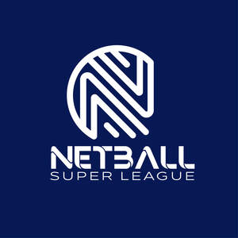
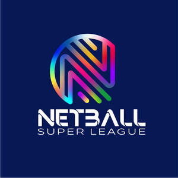
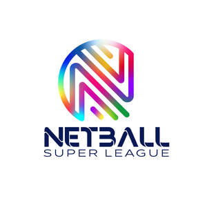

Trade Mark Journal No.2025/022 30 May 2025
UK00004197562 1 May 2025 (6,9,14,16,18,21,24,25,26,28,35,38,41)
Mark 1
Mark 2
Mark 3
Mark 4

Mark 5

Mark 6

- Class 6
- Trophies of common metal; Prize cups of common metal.
- Class 9
- Media content; Downloadable educational media; Recorded media.
- Class 14
- Precious metal trophies; Commemorative medals; Medals; Trophies coated with precious metal alloys; Medallions.
- Class 16
- Printed award certificates; Stationery; Manifolds [stationery]; Pads [stationery]; Paper and cardboard; Paper stationery; Letterhead paper; Paper sheets [stationery]; Paper bags; Note paper; Pads of paper; Paper pads; Pens; Ballpoint pens; Ball-point pens; Rollerball pens; Coloured pens; Pen and pencil cases; Pencils; Ball point pens; Notepads; Calendars; Advent calendars; Desk calendars; Wall calendars; Printed calendars; Year planners; Daily planners; Blank journal books; Souvenir event programs; Sticker activity books; Wall planners; Events programmes; Printed charts; Printed timetables; Tickets; Printed tickets; Entry tickets; Printed event admission tickets; Vouchers.
- Class 18
- Sports bags; Bags for sports; Sport bags; All-purpose sports bags; Bags for sports clothing; Athletics bags; Holdalls for sports clothing; Gym bags; Tote bags; Canvas shopping bags; Toiletry bags; Bags; Toilet bags.
- Class 21
- Water bottles; Plastic water bottles; Aluminum water bottles; Plastic water bottles [empty]; Aluminum water bottles, empty; Drinking bottles; Reusable stainless steel water bottles; Drinking bottles for sports; Mugs; Coffee mugs; Cups and mugs.
- Class 24
- Towels.
- Class 25
- Footwear for sport; Footwear for use in sport; Sweat shirts; Hooded sweat shirts; Sweat bottoms; Sweat bands; T-shirts; Short-sleeved T-shirts; Printed t-shirts; Polo shirts; Shorts [clothing]; Hoodies.
- Class 26
- Prize ribbons.
- Class 28
- Balls for sports; Sports balls.
- Class 35
- Promotion of sports competitions and events; Organization of events, exhibitions, fairs and shows for commercial, promotional and advertising purposes; Preparation of mailing lists; Promotion of special events; Event marketing; Providing business information in the field of social media; Advertising and marketing services provided by means of social media; Advertising services to promote public awareness of social issues; Advertising via electronic media and specifically the internet; Advertising services to promote public awareness in the field of social welfare; Promotional marketing services using audiovisual media; Sales promotion using audiovisual media; Advertising in the popular and professional press; Online advertising via a computer communications network; Influencer marketing; Marketing; Advertising and marketing; Affiliate marketing; Product marketing; Promotional marketing; Digital marketing; Online marketing; Direct marketing; Database marketing; Distribution of advertising, marketing and promotional material; Marketing plan development ; Development of marketing strategies and concepts; Marketing (Business advice relating to -); Advertising; Advertising and publicity; Publicity and advertising.
- Class 38
- Audio, video and multimedia broadcasting via the Internet and other communications networks; Transmission of messages over electronic media; Transmission of messages using electronic media.
- Class 41
- Arranging of award ceremonies to recognise achievement; Organisation of competitions and awards; Arranging of award ceremonies; Sporting competitions (Arranging of -); Tournaments (Staging of sports -); Sporting competitions (Organising of -); Organising of sporting events, competitions and sporting tournaments; Organisation of sporting competitions; Organisation of sports competitions; Organising of sports competitions; Competitions (Organising of sports -); Sports competitions (Organising of -); Organisation of sports tournaments; Organising of sports events and of sports competitions; Organising of sports competitions and sports events; Organisation of games and competitions; Organisation of sporting competitions and sports events; Publication of calendars of events; Booking of seats for shows and sports events; Organization of sporting events and competitions; Organizing cultural and arts events; Organizing community sporting and cultural events; Ticket reservation and booking services for sporting events; Ticket reservation and booking services for cultural events; Organising of sports events; Provision and management of sporting events; Entertainment services provided during intervals at sports events; Ticketing and event booking services; Organization of sporting events; Organisation of sporting events and competitions; Organising community sporting events; Provision of sporting events; Sporting event organization; Organising community cultural events; Organising events for cultural purposes; Publication of books, magazines, almanacs and journals; Production of sporting events; Organising of sporting events; Organising sporting events; Ticket reservation and booking services for education, entertainment and sports activities and events.
Netball Super League LTD